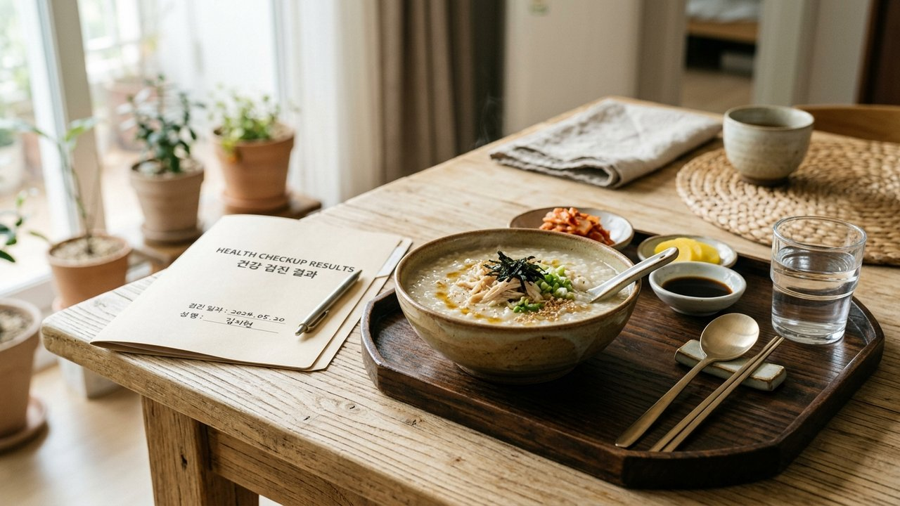
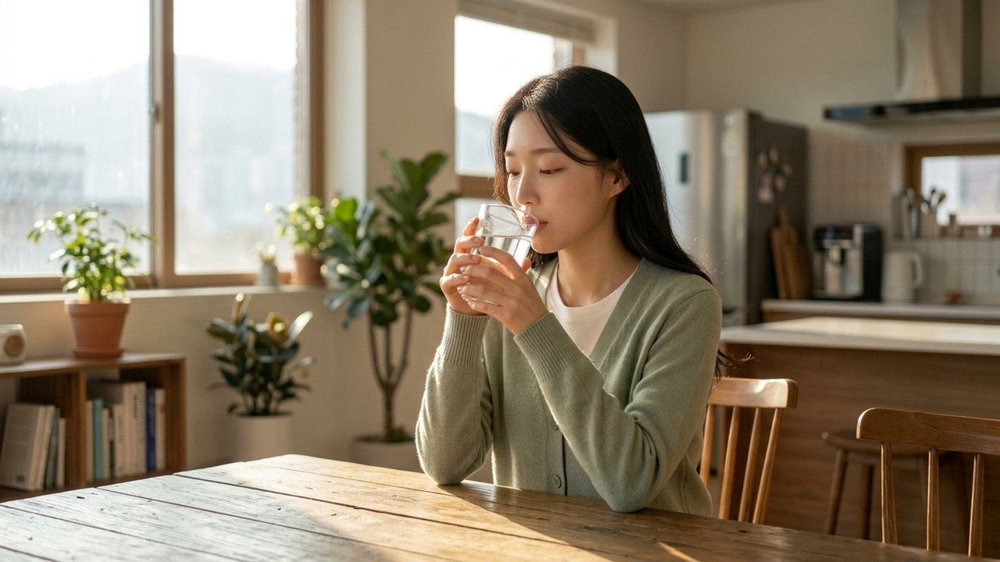
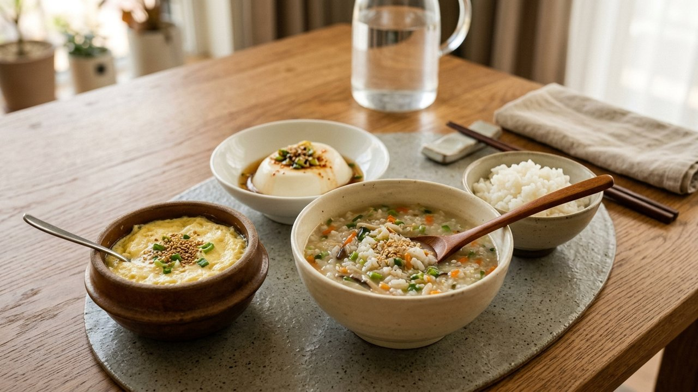
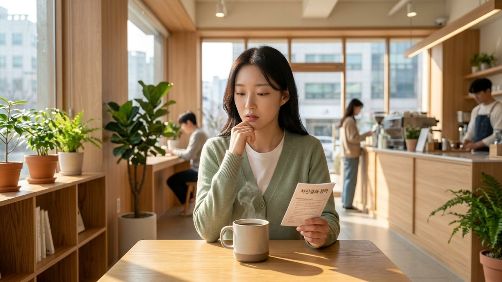
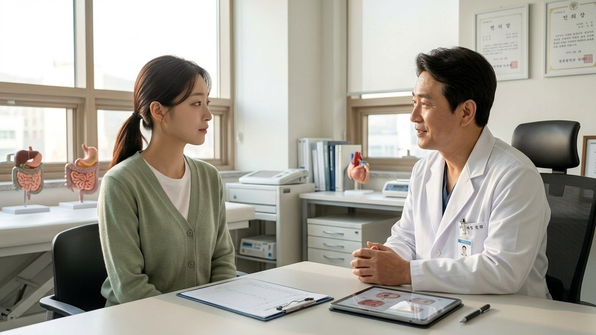
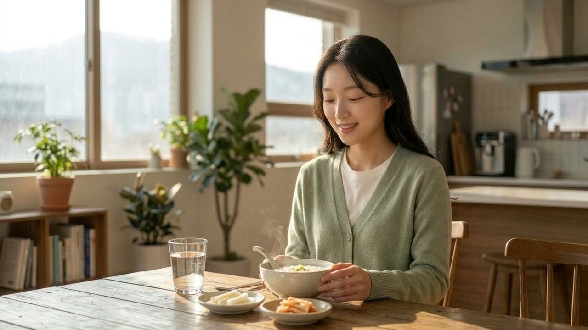

“검사 끝났는데 밥은 언제?” 위내시경 후 식사 커피 기준

검사실 회복실 침대에서 비몽사몽 눈을 뜨자마자
목구멍은 바짝 마르고 뱃속에서는 꼬르륵 소리가 요동치시죠?
전날 저녁부터 물 한 모금 제대로 못 마신 상태라
병원 문을 나서자마자 얼큰한 찌개나 맛집으로 달려가고 싶으실 겁니다.
"검사도 무사히 다 끝났는데 바로 밥 먹어도 되겠지?"
하고 생각하셨다면 잠깐만 숟가락을 내려놓아 주세요!
검사 직후 무심코 들이켠 물 한 모금이나 국물이
식도가 아닌 기도로 흘러드는 '흡인성 폐렴'을 부를 수 있습니다.
"의사 선생님이 1시간 뒤에 먹으라던데 시원한 아메리카노는 안 될까요?"
"혹시 용종 뗐는데 오늘 저녁에 일반 밥 먹으면 큰일 나나요?"
오늘 에디터 혀니가 내시경 직후 안전하게 속을 달래는
첫 식사 골든타임과 커피 음용 수칙을 명쾌하게 싹 정리해 드립니다!
| 목 마취 풀리기 전 물 삼키면 안 되는 이유

위내시경을 받을 때 굵은 호스가 목구멍을 통과하더라도
구역질이 나지 않도록 쌉싸름한 마취 스프레이를 목에 뿌렸던 기억나시죠?
이 리도카인 국소 마취 성분은 최소 30분에서 1시간 동안
인두와 후두 점막의 미세 감각 신경을 일시적으로 마비시켜 둡니다.
쉽게 말해, 음식물이 들어올 때 기도를 닫아주는
우리 몸의 '후두개 셔터문'이 아직 고장 나 있는 상태인 셈입니다.
목에 감각이 온전히 돌아오지 않은 상태에서 음식을 꿀꺽 삼키면
식도가 아니라 허파로 직행해 급성 흡인성 폐렴을 일으키게 됩니다.
그래서 첫 식사 전 반드시 '물 한 모금 테스트'가 절대적인 필수입니다.
먼저 침을 세 번 삼켜보고 목에 이물감이 없다면,
미온수 두 모금을 천천히 삼켜
사레가 들리지 않는지 30초간 확인해 보세요!
| 일반식과 커피는 언제부터? 위벽 보호 시간표

목 마취가 풀린 것이 확인되었다면 검사 후 1시간 뒤부터
미지근하게 식힌 흰죽, 맑은 야채미음, 누룽지탕으로 시작하세요.
단순 검사자라면 당일 저녁(검사 후 4~6시간 경과)부터는
자극이 적은 부드러운 일반식
(맑은 된장국, 두부조림, 흰쌀밥)이 가능합니다.
하지만 기름진 삼겹살, 바삭한 튀김, 맵고 짠 김치찌개는
밤새 비어 예민해진 위벽에 화상을 입히듯
자극을 주니 당일엔 꼭 피하셔야 해요.

그리고 많은 직장인분들이 눈물겹게 여쭤보시는 모닝커피!
아무리 피곤하셔도 검사 당일 커피는 무조건 하루 참으셔야 합니다.
내시경 카메라가 스치고 지나가며
붉게 부어오른 위 점막에 카페인이 닿으면,
위산 분비 펌프가 폭발해 위경련과 극심한 속쓰림을 유발하거든요.
커피는 다음 날 아침 든든하게 식사를 마친 뒤,
보리차처럼 연하게 탄 아메리카노로 부드럽게 시작하는 것이 가장 현명합니다.
| 조직검사나 용종을 뗐다면 이것만은 지키세요

만약 의사 선생님이 조직검사(생검)를 했다고 말씀하셨다면,
점막 찰과상 지혈을 위해 최소 2시간 동안 물 포함 완전 금식이 필수입니다.
더 나아가 위 용종을 절제하고 지혈 클립을 짚은 경우라면
시술 당일은 맑은 미음, 이틀 동안은
부드러운 죽을 드시며 위장을 아껴주셔야 합니다.
특히 많은 분들이 무심코 지나치는 가장 치명적인 위험이 있는데요.
용종 절제 후 최소 1~2주간은 비행기 탑승이 절대 금기입니다!
비행기 기내의 낮은 기압(해발 2,000m 수준) 때문에
장기 내부 공기가 팽창하면서,
클립으로 집어둔 미세 혈관이 터져
공중에서 대량 출혈이 일어날 수 있기 때문입니다.
복압이 치솟는 헬스 웨이트 트레이닝, 골프, 등산은 물론
혈관을 확장시키는 사우나와 열탕 목욕도 딱 일주일만 참아주세요.
혹시라도 변기 물이 새까맣게 변하는 흑색변이나 토혈이 나타난다면
지체하지 마시고 검사받으신 병원 응급실로 즉시 달려가셔야 합니다!

1년에 한 번 큰마음 먹고 끝마친 소중한 건강검진인 만큼,
오늘 하루는 고생한 내 위장에게 따뜻한 흰죽 한 그릇으로
편안하고 온전한 쉼을 선물해 주는 건 어떨까요?
여러분은 내시경 끝나고 주로 어떤 음식으로 속을 달래셨나요?
평소 가장 생각나던 최애 회복 메뉴를 댓글로 편하게 남겨주세요 😊
검진 당일 무심코 커피나 물을 마셔 고민이셨던 분들이라면 검사 순서 조정법과 대처 요령을 꼭 함께 확인해 보세요!
- 1. 대한소화기내시경학회 (KSGE) 진정내시경 및 치료내시경(용종절제술) 시술 후 환자 안전관리 임상진료지침
- 2. 질병관리청 국가건강정보포털 상부위장관내시경 검사 후 주의사항 및 합병증 예방 가이드라인
- 3. 미국소화기내시경학회 (ASGE) Standards of Practice Committee Guidelines on post-endoscopy diet, sedation recovery, and adverse events management
- 4. 대한소화기학회 위장관 점막 손상 보호 및 고주파 점막하 박리술 후 지연성 출혈 예방 표준 가이드